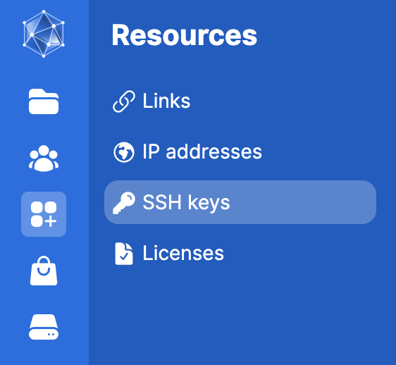
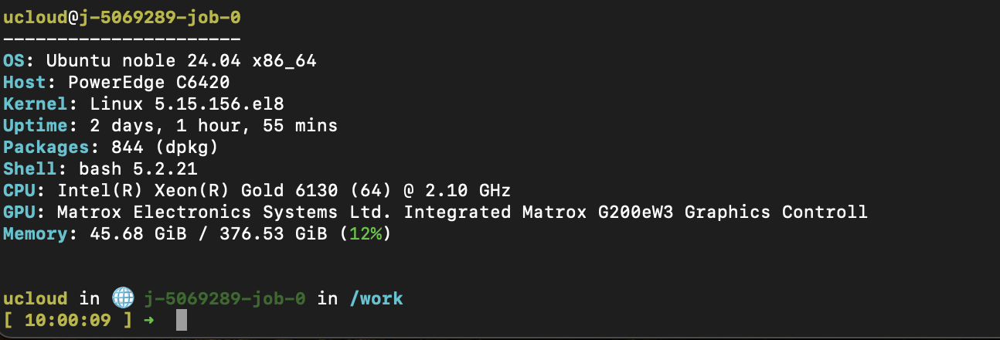

SSH keys
Using SSH keys for authentication is recommended for accessing servers and version control platforms such as GitLab, GitHub, or BitBucket. SSH keys provide a more convenient and secure method than passwords, allowing you to avoid typing a password every time you log in.
This tutorial guides you through configuring SSH keys, using GitHub as an example.
What is an SSH key?
An SSH (Secure Shell) is a network protocol that allows you to execute commands on a remote server securely. SSH keys are cryptographic keys used for authenticating a user or device within the SSH protocol. They come in pairs: the “private” key and the “public” key.
- Public Key: This key can be freely shared with anyone and is added to the ~/.ssh/authorized_keys file on the remote server you wish to access.
- Private Key: This key should remain on your local machine and be carefully protested, similar to a password. It should never be shared.
The holder of the private key can authenticate with any remote system that has the corresponding public key. For example, you can use a single public/private key pair to authenticate with the cluster at your research center and your GitHub account.
Think of the public key as a complex number x, and the private key as its inverse 1/x. Encrypting a message m with your public key is like multiplying your message by x, making mx completely unreadable. Using the private key, you can decrypt m by multiplying mx by 1/x. This process is secure because you cannot derive 1/x from x. Therefore, you can safely distribute the public key to the machines you want to access while keeping the private key on your machine.
How do I create an SSH key?
Step 1: Creating a public/private key pair
On your (Mac or Linux) workstation, create the public/private key pair. There are several types of keys and by default you will get an RSA pair. When prompted for a passphrase, just hit enter so that you won’t need a password when logging in.
When prompted, press Enter to store the keys in .ssh/id_rsa (we recommend not to modify this). Press Enter twice again to skip setting a passphrase, which otherwise would require you to enter it each time you use git push or git pull. This process generates two files: the public key (~/.ssh/id_rsa.pub) and the private key (~/.ssh/id_rsa).
ssh-keygenGenerating public/private rsa key pair.
Enter file in which to save the key (/Users/abc123/.ssh/id_rsa):
Created directory '/Users/abc123/.ssh'.
Enter passphrase (empty for no passphrase):
Enter same passphrase again:
Your identification has been saved in /Users/abc123/.ssh/id_rsa
Your public key has been saved in /Users/abc123/.ssh/id_rsa.pub
The key fingerprint is:
SHA256:w8JIQXafdq6scMiNZefNd8lVz9UmIzm0eiO+pvGOM6A abc123@c9b1d769db6e
The key's randomart image is:
+---[RSA 3072]----+
| .+ . . |
| . o . . . o .|
| . + . = o =|
| . o o o . o =+|
| . = S + o +|
| . *.= * o o o |
| =.o.= + . + |
| Eo .o+.o . |
| . o*+ |
+----[SHA256]-----+cat `~/.ssh/id_rsa.pubssh-rsa AAAAB3NzaC1yc2EAAAADAQABAAABgQCs3nqhRr7FyB8UKxqQ5mA3Gk60oty5lGdzcpVxjL08QmjLz15X6Odo2EotmJQuzCyYbzPw4Tq404N3NOmVqYywrn03i3kmCnZd5MYq8yi72Zsk9qFfgEt7pxpf5WJ+AWSDXwUkUQK2FFby2RWbi4gwTmRHfkB999j8F3F/d5EpB0llQfxmZWIIrX9ampgxfI8+yTIyeG8gpx5028h1oR5qukEFJk6nAoj5on+/vBqHdc0AVPd6jNoNCDZ6ur4xwUPam8iQ6A4NfbnCVUPa95Wqt+QWEF6Mn4UB1WIvly+blDzg5rVXvd9B685bZjQWfUsxSiRPkhtV6X2yImklt+KjV0ufB/Yl1O+x6S8r2+I41WSxwJNr5h5L588l3GH4ehT79uCtrxiu4zas+4s9OW02Ox3auCfLi1/jp/CJ5IsuLwM/jPBXrgzw+HREKM2gtm9d12gU2b9o9bmASZVhEKqeTb0aRPjcTYYdnjOWUl+pqkdVPyB7mJs8NAQemN/shvM= abc123@c9b1d769db6eThe public key can be safely displayed cat and shared with any achine where it will function as a personal lock that can be only opened with your private key.
Tip 1: If you provided a passphrase when generating your keys, you would need to enter this passphrase each time you use your private key. The passphrase adds an extra layer of security in case your private key is compromised. For simplicity, we not always recommend using a passphrase unless you are working in environments where people not part of the project might have access.
Tip 2: DSA keys should be avoided. An RSA key with at least 2048 bits should provide sufficient security. Finally, ecdsa and ed25519 keys are also fine (don’t worry about the number of bits for these keys).
# Recommended
ssh-keygen -t rsa -b 4096
# Alternative
ssh-keygen -t ed25519Using an existing public/private key pair
If you already have an SSH key pair, you can use it without generating a new one. To check the details of your existing key, use the ssh-keygen command to display the key’s fingerprint.
ssh-keygen -l -f ~/.ssh/id_rsa2048 SHA256:7l0HauYJVRaQhuzmti8XEZImnRbzipu3NKGnE6tDFRk grg@t430s (RSA)Alternatively, check the content of the ssh directory: - Mac/Unix: ls -la ~/.ssh/ - Windows: ls ~/.ssh/
Step 2: Adding your SSH key to the ssh-agent
Follow the steps below if you are using Mac or Linux.
- Windows users: follow these instructions instead, the process is very similar.
- If you are getting errors when running the commands below, please read carefully these guidelines as GitHUb provides instructions on what to do with common issues users run into for this specific step 2.
- General GitHUbtroubleshooting
# ONLY if you need to start the ssh agent. First, verify it is not already running:
# pgrep -u $USER ssh-agent
# If that command returns a process ID, your SSH agent is running! If not, run the command below:
# eval "$(ssh-agent -s)"
# Manually modify the `~/.ssh/config` file to automatically load keys into ssh-agent, like in the example below. For GitHub, the User is **git**, do not write your own.
Host github.com
AddKeysToAgent yes
IdentityFile ~/.ssh/id_rsa
# Note: if the file does not `touch ~/.ssh/config`to create the file.
# Add the SSH private to the ssh-agent
ssh-add ~/.ssh/id_rsa
# Optional, verify the keys are loaded
ssh-add -l~/.ssh/config: add several hosts (servers, GitLab, GitHUb, etc.).
Edit the SSH config file Create and use a ~/.ssh/config file on your workstation. E.g., using a password-less ssh key for authentication and the following ~/.ssh/config, user abc123 can login with the ssh xyz command.
Host xyz
Hostname ssh-myserver.dk
User abc123
ServerAliveInterval 60
ForwardX11 yes
ForwardX11Trusted yes- Using paraphrases: store paraphrases in your keychain if you are using one. Please, follow the instructions here.
Step 3: Transferring the key
A. Transfer the key to GitHub/GitLab
Copy your SSH public key ~/.ssh/id_rsa.pub with your favorite editor, go to your GitHub profile (top left side) > Settings > Access > SSH and GPG keys > New/Add SSH key. You just need to fill up the title (e.g.: Personal laptop) and paste the copied key (e.g. ssh-rsa or ecdsa-xxx).
# Mac/Linux: copy key
cat ~/.ssh/id_rsa.pub | pbcopy
# Windows
cat ~/.ssh/id_rsa.pub | clipB: Transfer the key to a remote server
Transfer the public part of your key pair to the remote server. This can be done manually, but the easiest way is using ssh-copy-id:
ssh-copy-id -i ~/.ssh/id_rsa.pub <userid>@ssh-myserver.dkThis will prompt for a password to authenticate with the remote server in order to copy the file. Once successful though, future logins will use the key pair for authentication, and will not prompt for a password (assuming you login from your workstation, which has the private part of your key pair).
ssh-copy-id will blindly append the given key file to the remote ~/.ssh/authorized_keys file. If you made a mistake or copied the same key multiple times, you may want to edit this file! Each line in the file corresponds to one key.
You are set to start using your SSH key. If you are using UCloud, follow the next section; otherwise, you are done with this tutorial.
UCloud Users - ssh keys setup
Similarly to what is explained above, copy your key (manually or using e.g. pbcopy ~/.ssh/id_rsa.pub) and go to Resources (navigation panel on the left) > SSH keys.

Paste the public key here and give a title to your key as in the image below:
{kind=link}
When you have added the public part of the SSH key pair to your UCloud account, you can access jobs from your local computer if SSH access is possible for the given app and enabled upon job submission. Open Visual Studio Code to test this yourself! You will need to click on “Enable SSH Server” when submitting the job as follows:
{kind=link}
When a job with SSH access enabled starts, the command for accessing the job from your local computer via SSH is displayed from the job’s progress view.
{kind=link}
Now, open a terminal and run the command:
# the 4 digits will change everytime you start a new job
ssh ucloud@ssh.cloud.sdu.dk -p 2465If it is the first time you do this, this message will prompt, write yes
The authenticity of host '[ssh.cloud.sdu.dk]:2465 ([130.225.164.106]:2465)' can't be established.
ED25519 key fingerprint is SHA256:0Q5WMne+hzOwj5bEfssH/gQrxFDz2fvclCGsQbfLLb8.
This key is not known by any other names.
Are you sure you want to continue connecting (yes/no/[fingerprint])?Your terminal will look like the image below which means you can starting interacting with the job from the console on your computer. 
The connection can be closed using the command:
exit